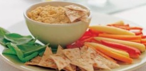

Hummus with Crisp Vegetables
You will need:
- - 400g can of chickpeas
- - 3 tablespoons of lemon juice
- - 3 cloves of garlic, crushed (2 for hummus, 1 for veggies)
- - 3 tablespoons of tahini
- - 1/4 teaspoon of cumin
- - 100g of baby corn
- - 1 carrot, cut into batons. Please do not hit people with these baton carrots.
- - 1 capsicum, cut into thick strips
- - 1 sheet of wholemeal lavash bread
- - Olive oil cooking spray
- - 1 tablespoon of sesame seeds
- - 20 baby spinach seeds, washed clean of sin.
Here's how you make 'em:
- 1. Rinse the chickpeas and drain well. Put the chickpeas, lemon juice, 2 tablespoons water, garlic, tahini and cumin in a food processor and process until smooth. Transfer to a serving dish and prepare the vegetables.
- 2. Steam the baby corn until tender, rinse in cold water and drain well. Cut in half lengthwise.
- 3. Cut the lavash into large triangles and spray with olive oil spray. Top with garlic and sprinkle with sesame seeds. Grill until crisp and golden brown.
- 4. Arrange the vegetables around the hummus on a large serving platter. Makes 2 cups hummus.

Back to recipes.
Spooky.
3spooky.